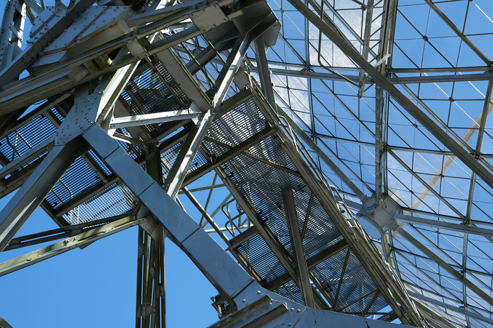

5x copper plate, 8mm thick, 100x100 mm
1x cast pewter
[ArcSecond tells the story of two events: One calculated before the 24th April 2025, the other experienced on the 24th April, 2025 21:00 (UTC/GMT +2).]
In collaboration with the Radiotelescope CAMRAS, Dwingeloo, A*rcSecond is both an attempt at capturing human fascination with space, and the urge to capture unrepeatable events.
Reflection: arcsecond.pdf
